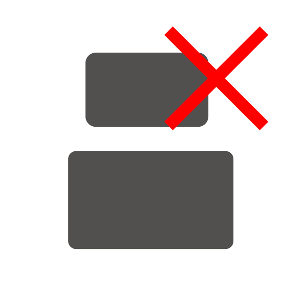

Содержание
Обзор интерфейса
Главное окно состоит из трех частей: левой для управления колодами, центральной для управления картами и правой для управления содержимым каждой карты. В верхней левой части есть две кнопки: “Настройки” и “Справка”. Нажмите первую кнопку, если вы хотите изменить настройки нашего приложения, и нажмите кнопку “Справка”, чтобы перейти на эту страницу руководства. Внизу есть кнопка, с помощью которой можно выбрать все существующие колоды для тренировки, и поле со списком, переключая его в разные состояния, вы можете выбрать способ отображения карт при тренировке. Ниже находится список колод. Вы можете увидеть название каждой колоды и количество карт, которые в нее входят. Кроме того, для каждой колоды есть поле со списком. Он абсолютно такой же, как и предыдущий, за исключением того, что его значение применяется только к определенной колоде. В нижней части левой части окна расположены три кнопки для управления колодами. Используйте их, чтобы добавлять, удалять или выбирать папку для колод. Под этими кнопками расположена та, что побольше. Эта кнопка запускает новый сеанс повторения карточек системы Лейтнера.
В верхней части центральной секции есть текстовое поле и кнопка для изменения названия выбранной колоды. Чуть ниже находится поле для поисковых запросов на поиск карт в выбранной колоде. Под этим полем находится список карт, в котором вы можете увидеть карты в выбранной колоде. В нижней части центральной части есть кнопка для создания и удаления карт из колоды, а также для импорта и экспорта карт из Excel.
В правой части окна отображается выбранная карта. Каждая карточка состоит из частей вопроса и ответа. И каждая часть включает текст, который вы можете ввести ниже, и изображение, которое можно загрузить с вашего компьютера с помощью кнопок в верхней части раздела. Кроме того, есть две кнопки, которые вы должны использовать, чтобы сохранить или отменить изменения, внесенные вами в выбранную карту.
Начало работы
- Кликните кнопку, чтобы выбрать, какая папка будет использоваться для сохранения колод. Если вы хотите запомнить свой выбор колоды, установите его в настройках.
- Кликните , чтобы создать новую колоду в списке колод.
- Вы можете изменить название колоды по умолчанию, введя его в текстовое поле в верхней части центральной секции. Чтобы сохранить новое имя, нажмите “Переименовать”.
- В нижней части центральной секции кликните кнопку, чтобы создать новую карту
- Выберите эту карту в списке, нажав на неё
- В правой нижней части окна введите вопросы и ответы для этой карточки
- Нажмите кнопку "Изображение вопроса", чтобы загрузить изображение для вопроса, или кнопку "Изображение ответа", чтобы загрузить изображение для ответа
- Не забудте нажать на кнопке, чтобы сохранить изменения в карте
- Создайте карты и колоды в неограниченном количестве
- Установите флажки для колод, которые вы хотите повторить, или нажмите кнопку, чтобы выбрать все колоды.
- Нажмите кнопку "Начать тренировку", чтобы начать обучение
- Повторяйте тренировку каждый день, чтобы запомнить все, что вы хотите!
Действия с колодами
- Секретная папка для чтения и сохранения колод, нажав кнопку
- Создайте новую колоду, нажав кнопку
- Удалите выбранную колоду, нажав кнопку
- Переименуйте выбранную колоду, нажав кнопку "Переименовать"
- Выберите колоду для тренировки, установив соответствующий флажок или нажав кнопку "Выбрать все".
- Измените тип повторения выбранной колоды, изменив значение соответствующего поля со списком
- Копируйте колоды. Для этого выберите колоды и нажмите "Ctrl +C".
- Вставьте колоды. Для этого нажмите "Ctrl + V".
Действия с картами
- Создайте новую карту нажав на кнопку
- Удалите выбранную карту, нажав кнопку
- Измените ответ или вопрос на выбранных карточках, введя новое значение в текстовые поля в правом нижнем углу окна.
- Добавьте изображение вопроса или ответа на карточку, нажав кнопку "Изображение вопроса" или "Изображение ответа" соответственно
- Сохраните изменения в карте, нажав кнопку
- Отмените изменения в карте, нажав кнопку
- Копируйте карты. Для этого выберите карты и нажмите "Ctrl +C".
- Вставьте карты. Для этого нажмите "Ctrl + V".
Типы повторения колод
Каждая колода может быть повторена тремя различными способами:
- Прямолинейно: сначала показывается вопрос к каждой карточке, и только потом вы можете увидеть ответ
- Обратно: сначала показывается ответ на каждой карточке, и только потом вы можете увидеть вопрос
- Случайный: какая сторона карт будет показана сначала, решается случайным образом
Более того, вы можете установить тип повторения не для конкретной колоды, а для каждой колоды. Для этого вы должны использовать поле со списком в верхнем левом разделе. Примечание: по умолчанию вы не можете изменить тип повторения для определенных колод. Чтобы включить его, поверните поле со списком в верхней части левой секции в положение "Вручную".
Импорт и экспорт в Excel
Чтобы экспортировать карточки в Excel, выберите карточки, которые вы хотите экспортировать, и нажмите
ПРИМЕЧАНИЕ: Импорт из Excel возможен только в том случае, если файл Excel имеет правильный формат. Каждая строка - это одна карточка, первый столбец предназначен для ответов, а второй - для вопросов. Изображения не могут быть импортированы или экспортированы через Excel. Пример правильного формата файла вы можете увидеть ниже
Настройки
В этом окне вы можете установить папку колоды по умолчанию, нажав кнопку "Выбрать". Кроме того, есть настройки резервного копирования. Если вы хотите, чтобы ваши колоды копировались при каждом запуске приложения, установите соответствующий флажок. И выберите папку для создания резервной копии, нажав "Выбрать".
Также на этой вкладке есть настройки шаблона. Шаблон позволяет вам установить настройки тренировки и запомнить их, чтобы каждая тренировка выполнялась с одинаковыми настройками.Чтобы создать новый шаблон, нажмите
Не забудте нажать
Тренировка
Во время тренировки приложение покажет вам карты из выбранных колод. Во-первых, вы видите вопрос. Вы должны попытаться запомнить ответ на этот вопрос. Если вы четко сформулировали ответ в своей голове, нажмите кнопку "Показать ответ" и сравните свой ответ с правильным. Если они совпадают друг с другом, нажмите кнопку "Правильно", и вы увидите эту карточку гораздо позже, в противном случае нажмите "Неправильно", и вы увидите эту карточку на следующий день. Также вы можете внести изменения в карточку, как вы это сделали в главном окне. Не забудьте сохранить изменения. Также вы можете удалить текущую карту, нажав
Вы также можете завершить обучение до того, как все карты будут повторены, нажав "Завершить".ПРИМЕЧАНИЕ: Чтобы сохранить результаты тренировки, нажмите кнопку "Домой". Если вы этого не сделаете, результаты тренировки не будут сохранены
Горячие клавиши
- Ctrl+C: Копировать выбранные карты или колоды
- Ctrl+V: Вставить выбранные карты или колоды
- Del: Удалить выбранные карты или колоды
- Ctrl+N: Создать новую колоду или карту
- Ctrl+O: Выбрать папку с колодами
- Ctrl+A: Выбрать все колоды или карты
- Ctrl+MoudeClick: Выбрать несколько карт или колод одновременно
- Shift+MoudeClick: Выбрать диапазон карт или колод
- Enter: Показать ответ
- Left arrow: Верный ответ
- Right arrow: Неверный ответ